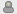
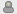

Wyświetlanie wpisów i kontaktowanie się z innymi
Kilka narzędzi systemu Kablink Teaming (na przykład listy folderów i wyniki wyszukiwania) wyświetla podsumowanie informacji o wpisach. Informacje w tym podsumowaniu umożliwiają wyświetlenie wpisu lub skontaktowanie się z jego autorem, co opisano w kolejnych częściach.
Wyświetlanie wpisów
Aby wyświetlić wpis, wystarczy kliknąć jego tytuł.
Można skonfigurować sposób, w jaki wyświetlane są wpisy w witrynie Teaming. Po otwarciu wpisu w witrynie Teaming można go wyświetlić jako nakładkę w nowej stronie lub w oknie wyskakującym.
Aby zmienić sposób wyświetlania wpisów w witrynie Teaming, należy:
-
W głównym panelu bocznym w części należy kliknąć .
-
Wybrać żądany sposób wyświetlania wpisów.
Porozumiewanie się z innymi
Podsumowanie wpisu zawiera ikonę , która znajduje się obok nazwy autora. Ikona obecności ma następujące możliwe stany:

 

-
Zielony: Osoba jest w trybie online i jest aktywna.
-
Żółty: Osoba była ostatnio aktywna, ale jest teraz nieobecna.
-
Szary: Osoba nie jest zalogowana do klienta Kablink Conferencing.
-
Biały: Stan osoby jest nieznany.
Aby skontaktować się z tą osobą, należy kliknąć ikonę i wybrać element menu. Można natychmiast rozpocząć lub zaplanować spotkanie z tą osobą, zadzwonić do niej, dodać ją do schowka lub wyświetlić jej Mikroblog.